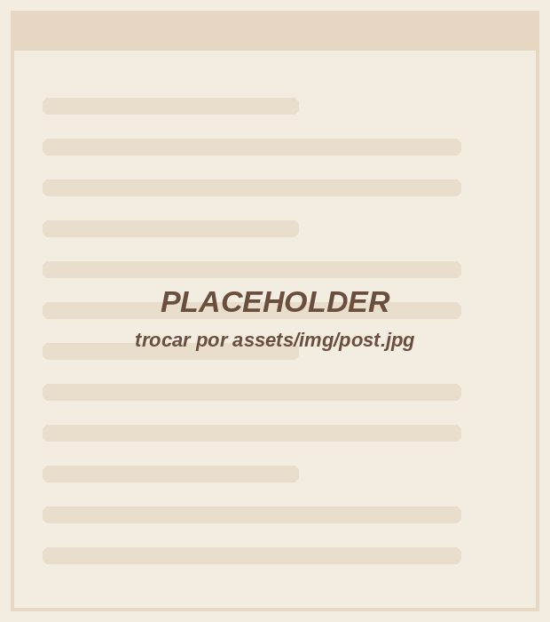
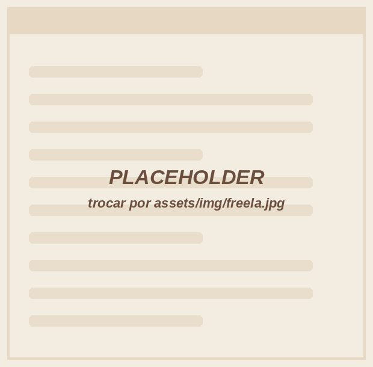
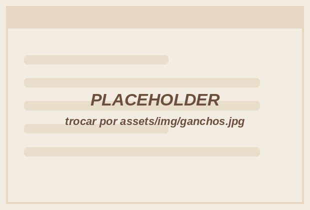

01
Clientes
Nunca mais procure briefing no WhatsApp.
Ficha completa de cada cliente: dados, plano, redes, acessos e um briefing estruturado em 5 fases.
A central no Notion que coloca clientes, calendário, leads, tarefas e equipe no mesmo lugar. Você duplica hoje e amanhã já abre o computador sabendo o que entregar, para quem e quando.
pagamento único · Pix ou cartão · garantia de 7 dias

Se marcou duas ou mais, o problema não é você. Você está fazendo trabalho de agência sem o sistema de uma agência.
Ela não aparece na fatura do cartão, mas aparece no fim do mês.
por atraso, esquecimento ou falta de alinhamento leva embora uma mensalidade inteira, todo mês.
vira um contrato que outra social media fecha no seu lugar.
é o que somam só 2 horas por semana procurando informação, refazendo planilha e conferindo o que já foi feito.
A Organiza SM custa R$ 56,99, uma única vez. Se ela evitar um único cancelamento, já se pagou muitas vezes.
A mesma lógica de uma agência, simplificada para quem trabalha sozinha ou com equipe pequena. O cliente que você cadastra aparece no calendário, nas tarefas e nas reuniões.
Ficha completa de cada cliente: dados, plano, redes, acessos e um briefing estruturado em 5 fases.
Visão por mês, semana e produção, e modelos prontos de carrossel e reels com estratégia, roteiro, legenda e checklist.
Funil do primeiro contato ao fechamento, com 5 scripts de venda, mapa de cenários e banco de objeções.
Gestão de tarefas ligada a cada cliente e setor, com o que vence hoje sempre em primeiro lugar.
Registro de reuniões, alinhamentos e acompanhamento de cada cliente.
Ficha de cada freela com portfólio, tabela de preços, regras, onboarding e histórico de pagamentos.
Um lugar para guardar trends, referências e ideias antes que elas sumam do seu feed.
Boas-vindas, envio de calendário, cobrança de aprovação, lembrete de pagamento e mais. É copiar, ajustar e enviar.
Prints reais da central no Notion. Tudo já vem montado, com instruções em cada página. Você só preenche com os seus clientes.




Cada cliente tem a própria página com o calendário de conteúdo. Você abre o card do post e encontra tudo: objetivo, pilar, roteiro, legenda, CTA, link da arte, status de produção e de aprovação.
Pagamento por Pix ou cartão. Assim que confirmar, o link chega no seu e-mail.
Um clique em "Duplicar" e a central inteira vai para a sua conta, com todos os setores conectados.
Preencha a ficha e veja o calendário dele aparecer. Depois é só repetir para a carteira toda.
A central já resolve a organização. Estes complementos são opcionais e você adiciona com um clique no checkout ou logo depois da compra.

POPs de comercial, onboarding, produção, gestão de clientes e offboarding, mais modelos de contrato, proposta comercial e programa de indicação.

100 aberturas para reels, carrossel, stories e legenda, com modelo para preencher e exemplo pronto, organizadas por tipo e objetivo.
Carteira de clientes, calculadora de preço por pacote, controle mensal, distribuição do lucro e dashboard anual. Excel e Google Planilhas.
33 mensagens prontas para conquistar clientes, do primeiro direct ao contrato assinado: abordagem, descoberta, reunião, proposta, follow-up e objeções.
Duplique, explore, cadastre seus clientes, use no seu dia a dia. Se em até 7 dias você sentir que o sistema não é para você, é só pedir o reembolso pela própria plataforma de pagamento. Sem perguntas e sem burocracia.

Eu já fui a social media que respondia cliente às 23h, perdia briefing em áudio e montava uma planilha nova a cada cliente que entrava. Trabalhava muito e mesmo assim sentia que estava sempre correndo atrás.
O que mudou o jogo não foi trabalhar mais. Foi ter um sistema. Hoje cuido de [X] clientes e de uma equipe, e tudo funciona porque cada cliente segue o mesmo processo, do primeiro contato à entrega.
O Organiza SM é a versão simplificada do sistema que eu uso todos os dias, feita para a social media que trabalha sozinha ou com equipe pequena. Eu tirei o que é coisa de agência grande e deixei o que muda a sua rotina já na primeira semana.
Carol Lima
Não. A central foi feita para funcionar no plano gratuito do Notion para uso individual. Você só precisa criar uma conta gratuita, se ainda não tiver.
Assim que o pagamento é confirmado, você recebe por e-mail o link da central. É só abrir, clicar em "Duplicar" e ela vai para a sua conta do Notion.
Não precisa ser especialista. A central já vem montada, com instruções dentro de cada setor. Se você sabe preencher um formulário, consegue usar.
Sim. Pelo aplicativo do Notion você consulta e atualiza tudo pelo celular. Para a primeira configuração, o computador é mais confortável.
Pode e deve. Depois de duplicada, a central é sua: dá para mudar cores, nomes, campos e setores do jeito que preferir.
Não. Você paga R$ 56,99 uma única vez e a central é sua para sempre.
Sim. Você pode convidar colaboradores para o seu Notion e usar o setor de Equipe para organizar freelas, valores e demandas.
Não. A central funciona completa sozinha. Documentação, ganchos e planilha são opcionais para quem quer ir além.
Você tem 7 dias de garantia. Se não fizer sentido para você, pede o reembolso pela plataforma de pagamento e recebe o valor de volta.
A diferença entre as duas custa R$ 56,99, uma única vez.
Quero organizar minha carteira →acesso em minutos · garantia de 7 dias